Kachel: bestanden, Kern 2 Passa/Jerusalem, die gesehenen Zeichen und Jesu Wissen um das Innere der Menschen sind nicht ausdrücklich sichtbar.
abgelegtes Bild: bestanden, 6 Punkte, Kern 1 Die Szene wird nur allgemein als Gespräch gezeigt; es fehlt, dass es Maria bei der Hochzeit in Kana ist, die Jesus sagt, dass kein Wein mehr da ist, sowie Jesu Antwort.
Blind: A veiled woman and a bearded man sit across a table with a jug and cups between them. The woman gestures as if explaining or asking something, while the man looks at her and listens. A few small background figures appear to be gathered or talking in the distance. – This may illustrate Jesus speaking with a woman, possibly the Samaritan woman during a conversation about water or 'living water,' though the visible scene shows a table with a jug rather than a well.
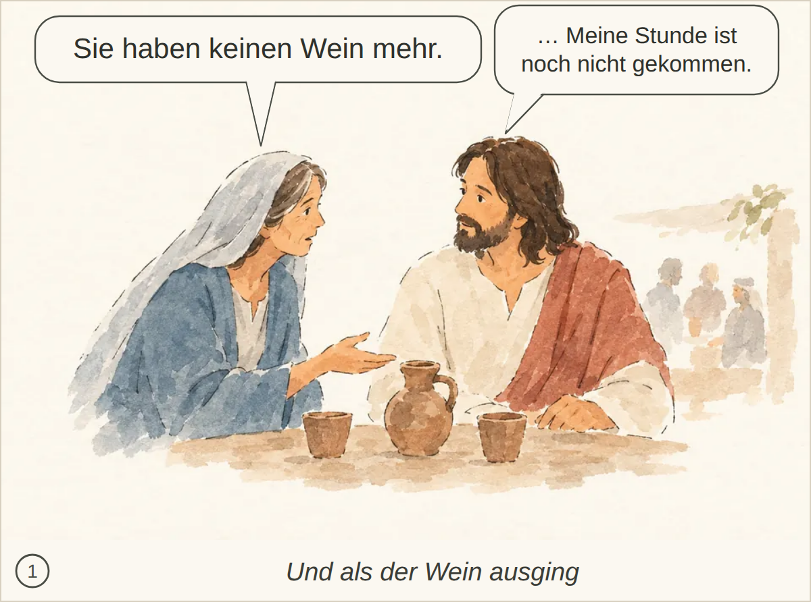
Kachel: bestanden, Kern 2 Nichts Wesentliches fehlt.
abgelegtes Bild: bestanden, 8 Punkte, Kern 2 Nichts Wesentliches; der genaue Ausspruch und der Glaube der Jünger werden nur nicht ausdrücklich erwähnt.
Blind: An older man in the center holds a cup and gestures while speaking to the young man wearing a flower crown. The others stand around and watch, appearing calm and pleased, as if at a formal or celebratory gathering. – This may illustrate the Wedding at Cana, specifically the moment when the master of the feast tastes the wine and speaks to the bridegroom after the water has been turned into wine.
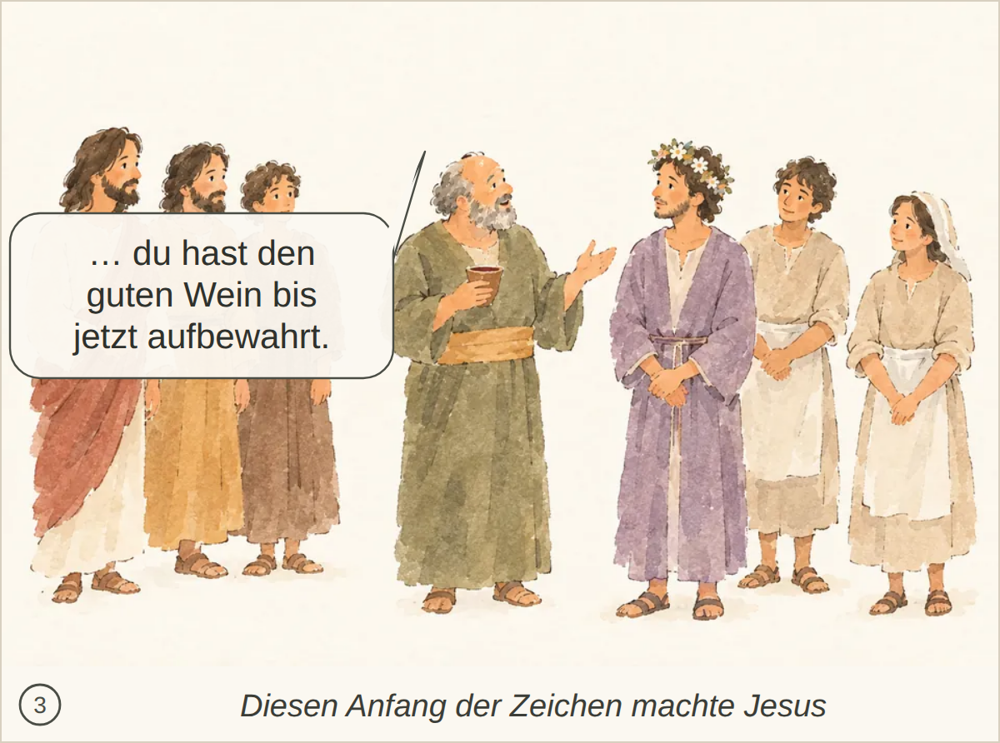
Kachel: bestanden, Kern 2 Nichts Wesentliches; der Glaube der Jünger wird nicht ausdrücklich erwähnt.
abgelegtes Bild: durchgefallen, 7 Punkte, Kern 2 Der Ausspruch «Macht das Haus meines Vaters nicht zu einem Haus des Handels!» wird nicht erwähnt.
Blind: A central bearded man in white and red is swinging a cord or whip and has knocked over a table, spilling coins onto the ground. Two men beside bird cages recoil in surprise while animals move away on the right. – This appears to illustrate Jesus cleansing the Temple, specifically the moment when he overturns the money changers' table and drives sellers and animals out.
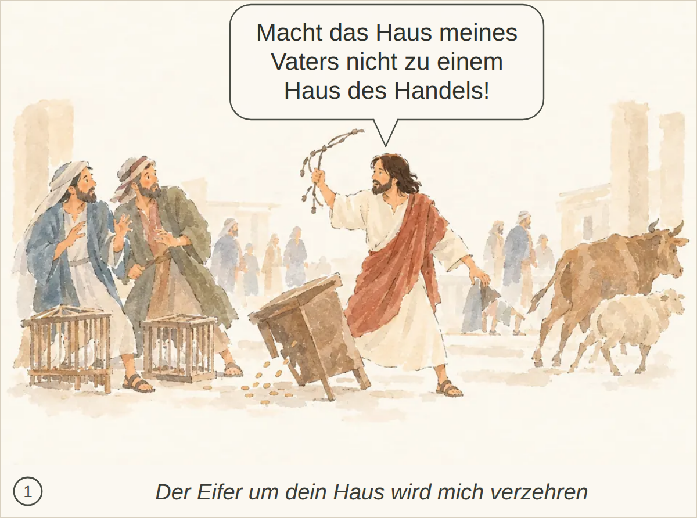
Kachel: bestanden, Kern 2 Nichts Wesentliches fehlt; der Moment ist klar erkannt.
abgelegtes Bild: bestanden, 6 Punkte, Kern 1 Die konkrete Frage nach dem Zeichen und Jesu Aussage über den niedergerissenen Tempel bzw. seinen Leib und die spätere Erinnerung nach der Auferstehung fehlen.
Blind: Three robed older men are standing together and facing a bearded man in a white tunic and reddish cloak. One of the older men gestures with an open hand while the man on the right touches his chest, suggesting a calm conversation or discussion. – This may illustrate a Bible scene of Jesus speaking with religious leaders or teachers at the temple, possibly the moment when they question him and he answers calmly.
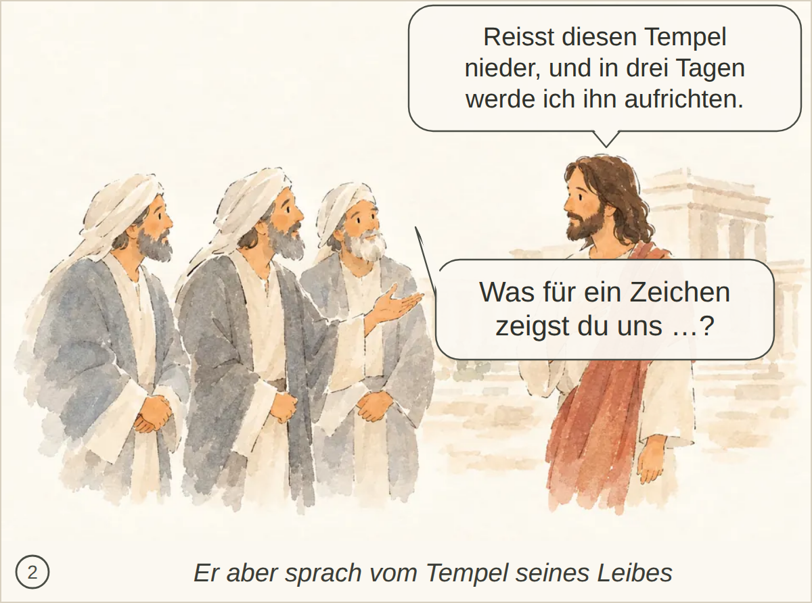
Kachel: unklar, Kern 2 Nichts Wesentliches; die spätere Erinnerung der Jünger nach der Auferweckung ist nicht dargestellt.
abgelegtes Bild: unklar, 6 Punkte, Kern 2 Nichts Wesentliches; der genaue Zuruf der Jünger ist nur nicht sichtbar.
Blind: Five men are in a small wooden boat on rough water. Four of them look tense and are bracing themselves, while one man lies asleep at the right end of the boat. One man reaches toward the sleeping man as if trying to wake or get his attention. – This appears to illustrate the Bible story of Jesus calming the storm, at the moment when Jesus is still asleep in the boat and the disciples are frightened by the storm, just before or as they try to wake him.
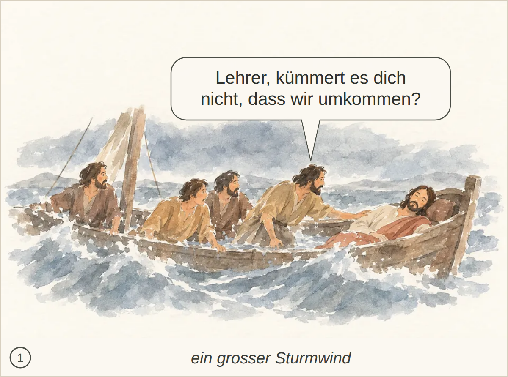
Kachel: bestanden, Kern 2 Nichts Wesentliches fehlt; der Sturm, das Boot, der schlafende Jesus auf dem Kissen und das dringliche Wecken durch die Jünger sind erfasst.
abgelegtes Bild: bestanden, 6 Punkte, Kern 1 Der Befehl Jesu an Wind und See wird nur als Geste beschrieben; dass der Wind sich legt und grosse Stille eintritt, fehlt bzw. wirkt durch „bewegtes Wasser“ unklar.
Blind: Three men are in a wooden boat on moving water. The standing man in white and red extends his hand outward over the water while the two seated men watch him closely. The scene suggests a dramatic moment on a lake or sea. – This likely illustrates the Bible story of Jesus calming the storm, at the moment when Jesus stands in the boat and gestures toward the wind and waves.
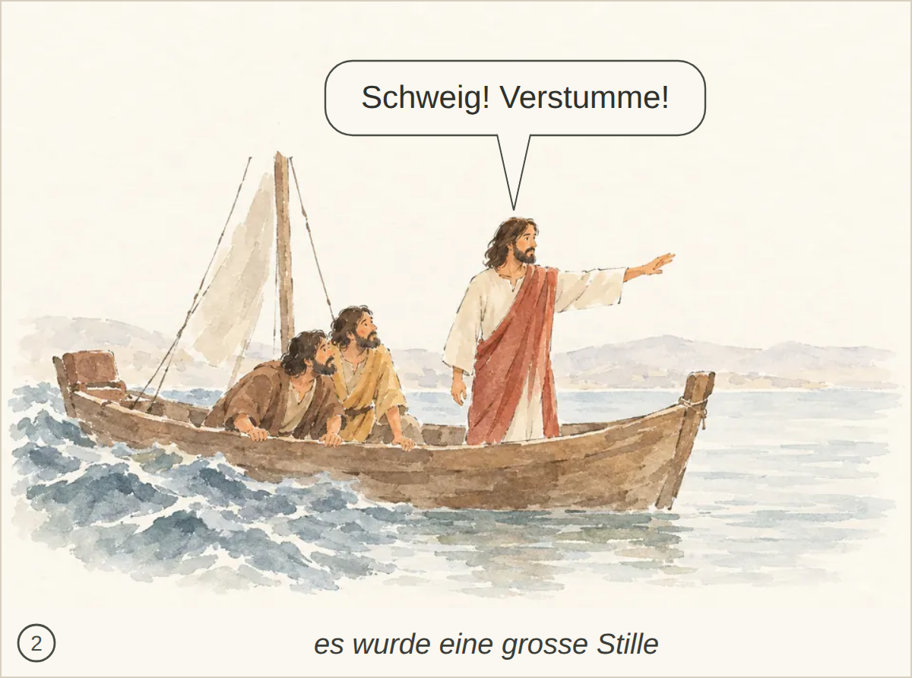
Kachel: bestanden, Kern 2 Nichts Wesentliches fehlt.
abgelegtes Bild: bestanden, 4 Punkte, Kern 1 Die Reue und der feste Entschluss, zum Vater zurückzukehren und seine Sünde zu bekennen, werden nicht klar erfasst.
Blind: A ragged man sits on the ground beside several pigs. The pigs are eating from a trough while the man looks upward, apart from them, appearing exhausted or troubled. – Likely the Bible parable of the Prodigal Son, at the moment when he is destitute among the pigs and longing for food before deciding to return to his father.
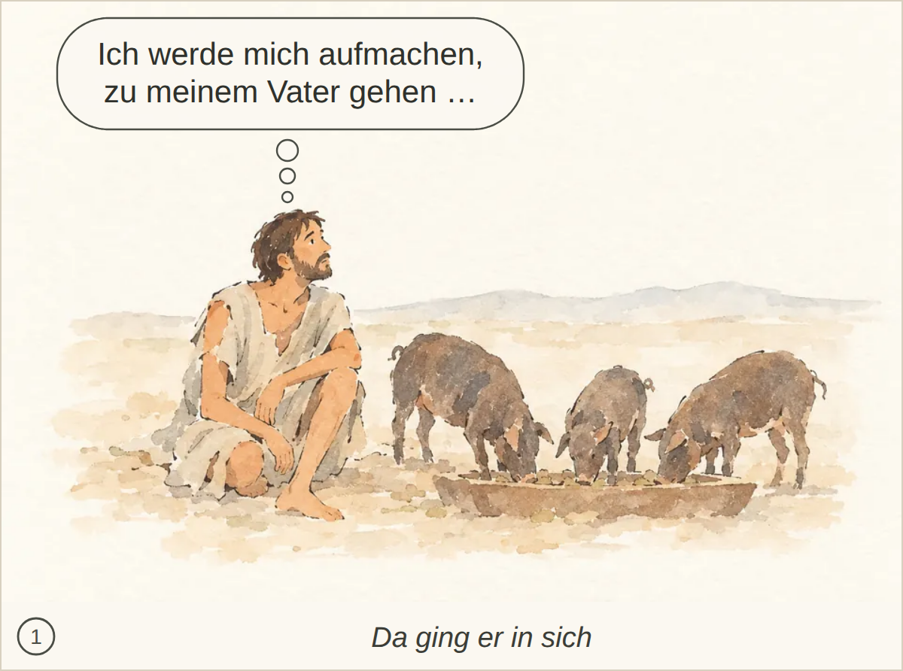
Kachel: bestanden, Kern 2 Nichts Wesentliches; Erbteilverschwendung, Hungersnot und genaue Worte des Bekenntnisses werden nicht ausdrücklich erwähnt.
abgelegtes Bild: bestanden, 6 Punkte, Kern 2 Kuss, Bekenntnis des Sohnes sowie Ring/Sandalen/Mastkalb werden nicht ausdrücklich erkannt; die Begrüßung/Umarmung ist aber klar.
Blind: An elderly man embraces a ragged younger man who is bowing his head. A distant figure in the background appears to be walking near a house, carrying something. – This likely illustrates the Bible story of the Prodigal Son, at the moment when the father welcomes and embraces his returning son.
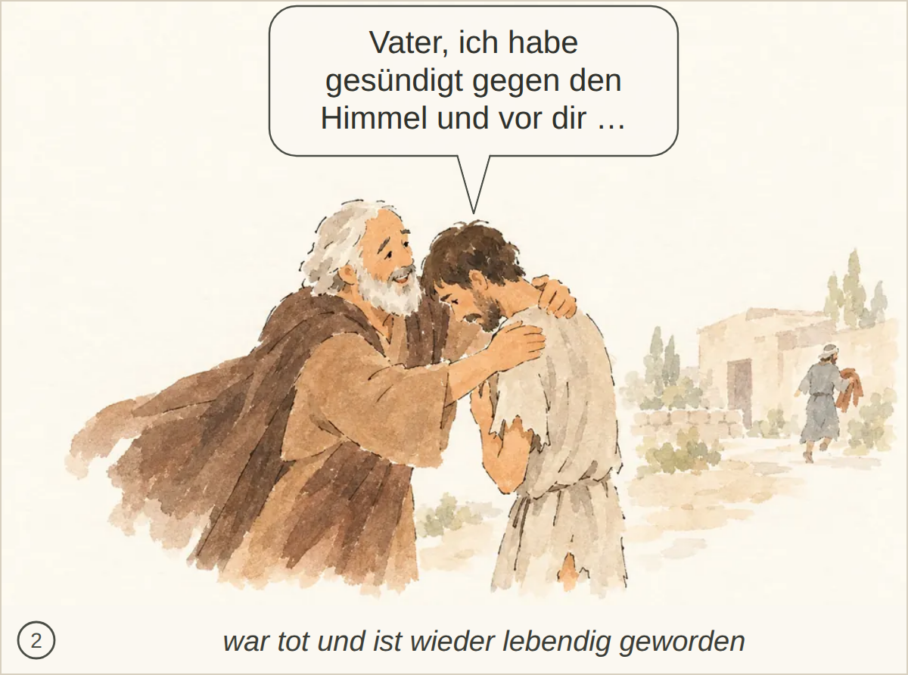
Kachel: bestanden, Kern 2 Nicht erwähnt: Kuss des Vaters sowie die Anweisungen zu Gewand, Ring, Sandalen und Mastkalb.
abgelegtes Bild: bestanden, 5 Punkte, Kern 2 Die konkreten Worte über das Zicklein und «alles, was mein ist, ist dein» sind nicht dargestellt.
Blind: An elderly man is reaching out and speaking to a younger bearded man. The younger man stands with crossed arms and turns his face away, while a small group in the background appears to be celebrating or moving near a house. – This likely illustrates the Bible parable of the Prodigal Son, specifically the father pleading with the older son outside while celebration for the returned younger son happens in the background.
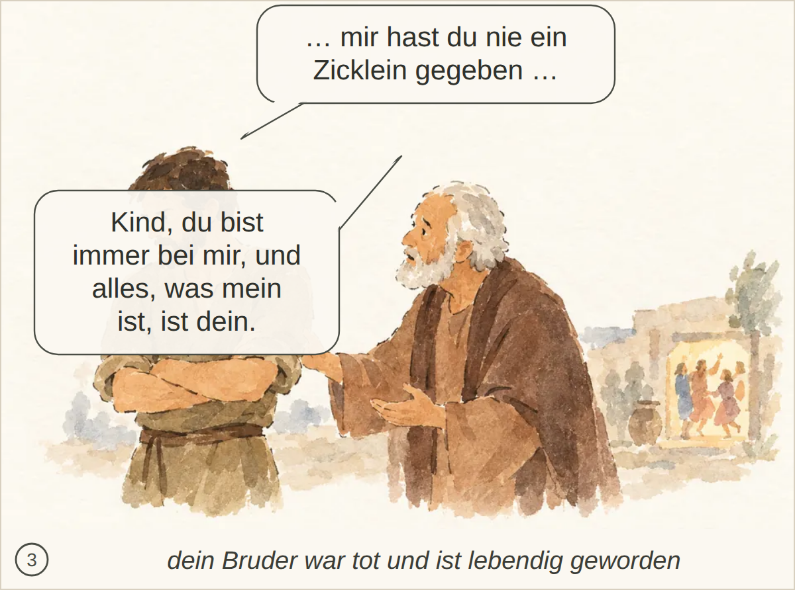
Kachel: durchgefallen, Kern 2 Nichts Wesentliches; die wörtliche Rede und das ausdrückliche Nicht-hineingehen sind nur angedeutet.
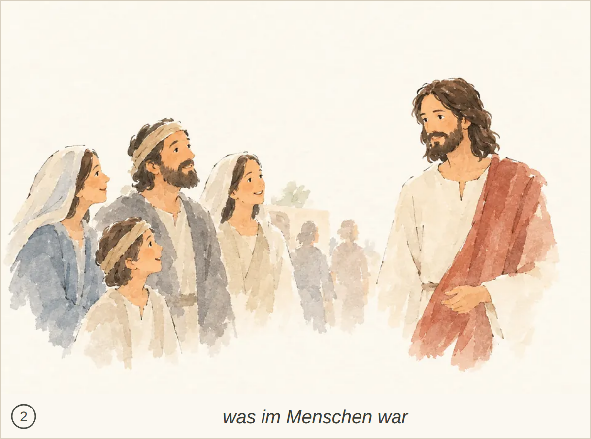
Kachel: bestanden, Kern 1 Die Menschen glauben wegen der Zeichen wird nur angedeutet; vor allem fehlt/bleibt unklar, dass Jesus sich ihnen nicht anvertraut, weil er ihr Inneres kennt.
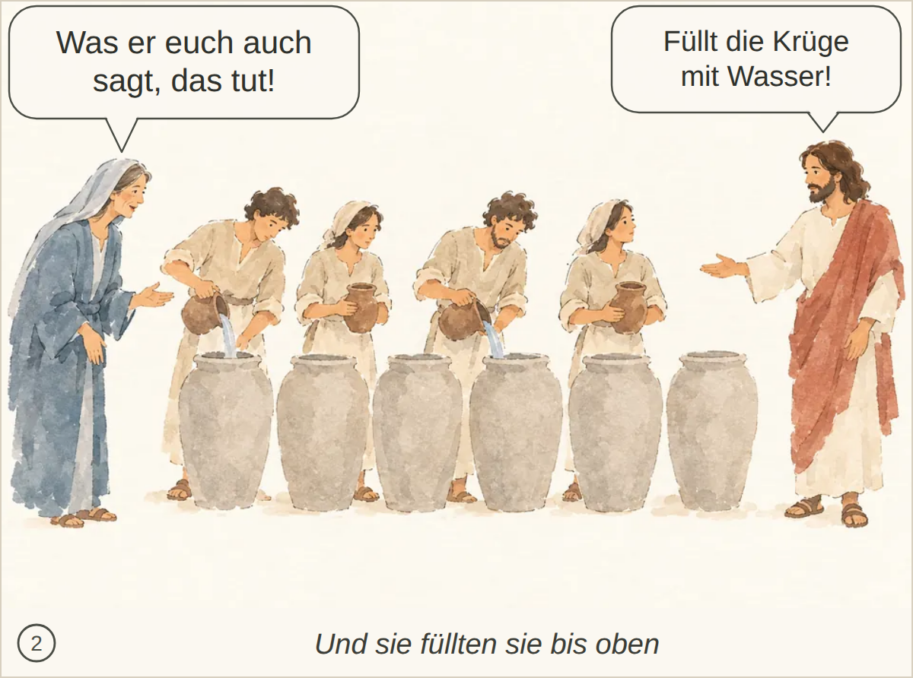
Kachel: bestanden, Kern 2 Nichts Wesentliches; das Schöpfen und Bringen zum Speisemeister wird nicht ausdrücklich erwähnt.
Kachel: bestanden, Kern 2 Passa/Jerusalem, die gesehenen Zeichen und Jesu Wissen um das Innere der Menschen sind nicht ausdrücklich sichtbar.
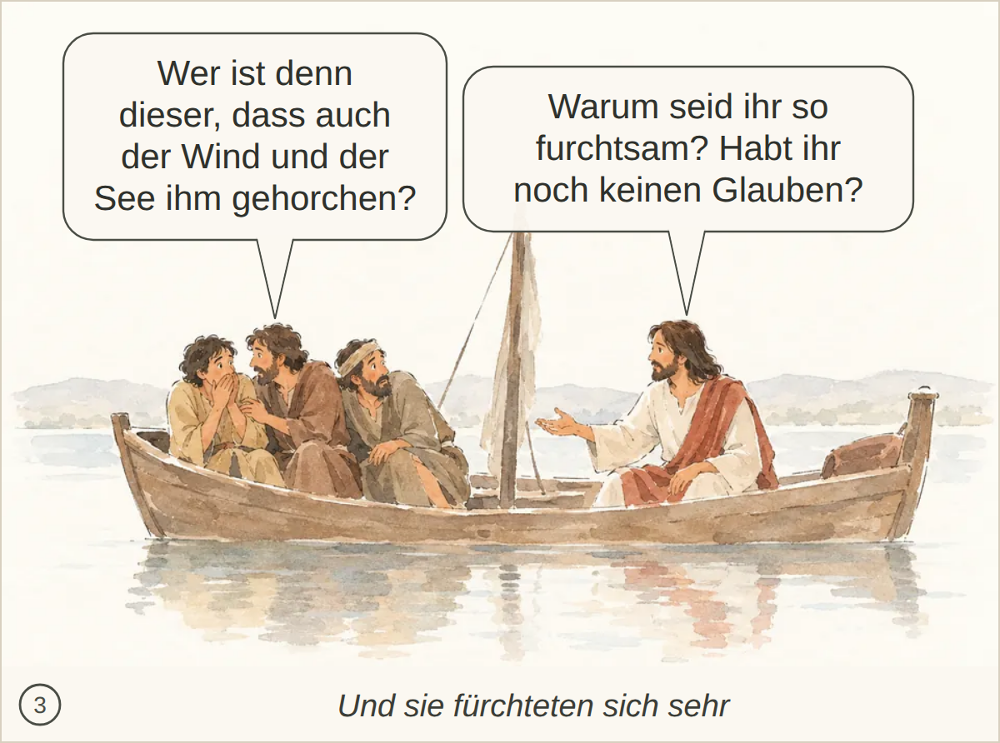
Kachel: bestanden, Kern 2 Nichts Wesentliches fehlt.